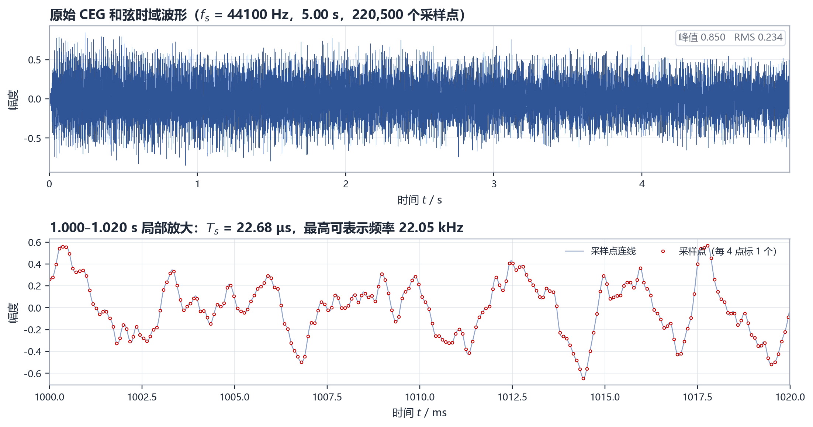
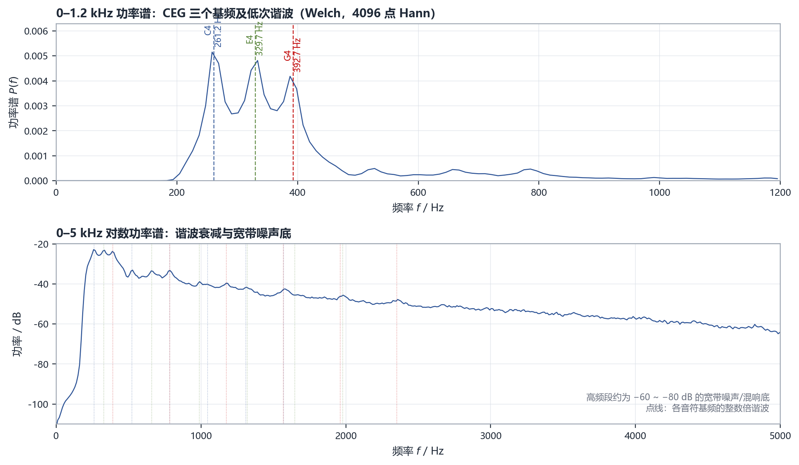
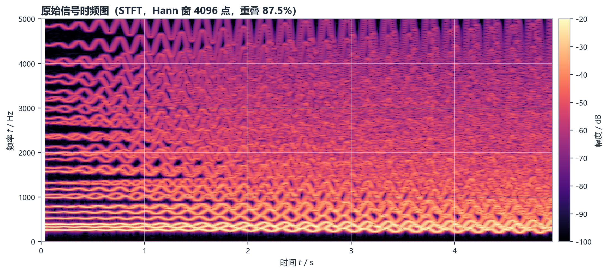
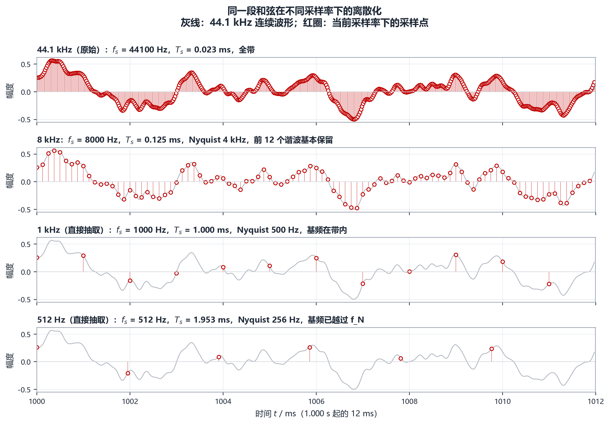
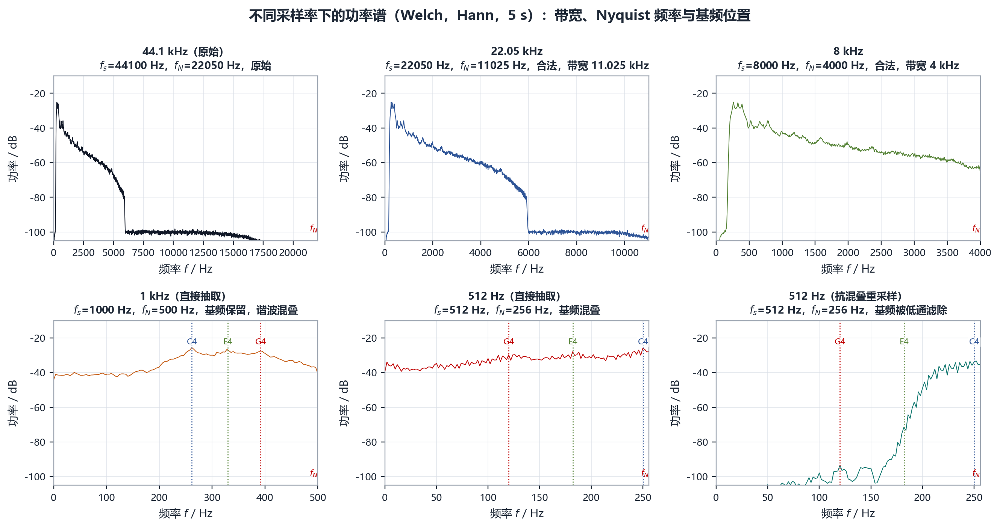
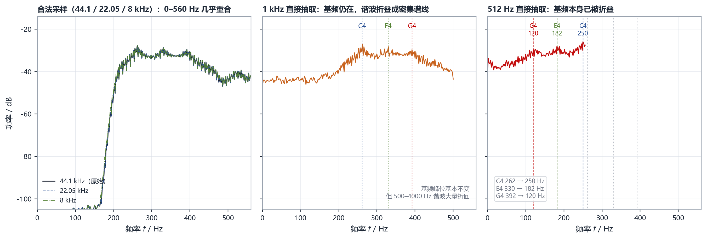
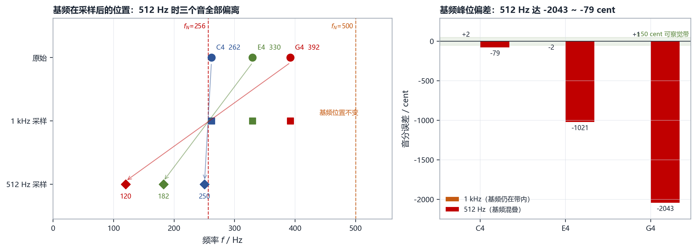
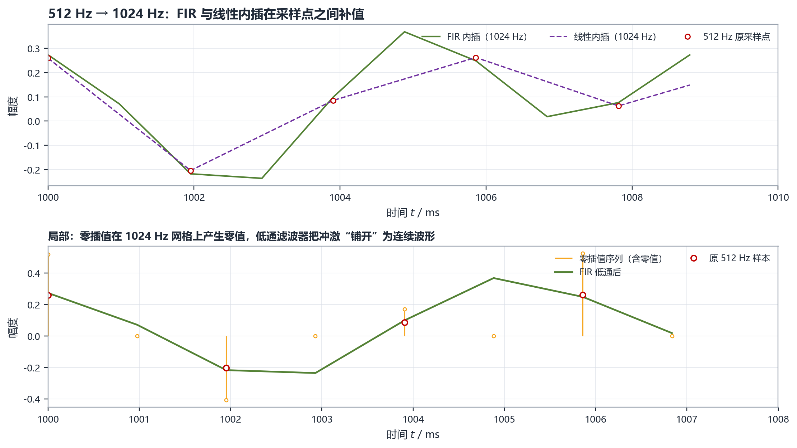
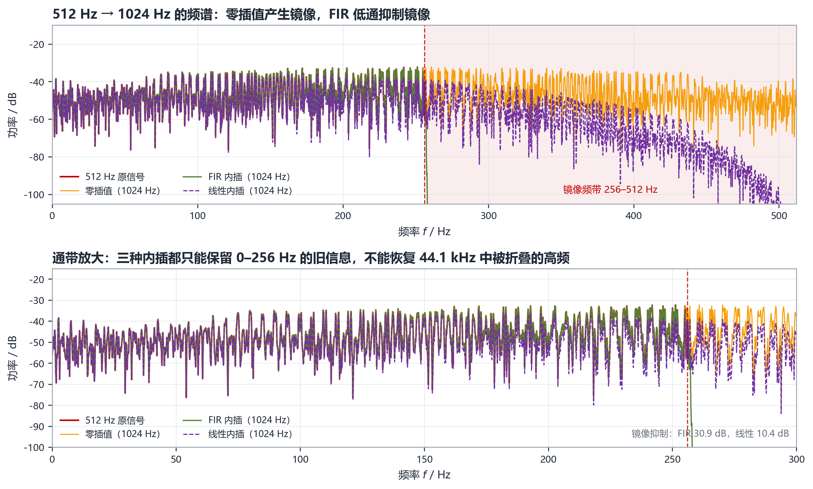

01
原始信号
44 100 Hz
原始 CEG 和弦，峰值归一化到 0.850
下载原始 WAV（16 bit / 5.000 s）从 DFT 频谱到 512 Hz 欠采样，再到 2 倍插值升采样：用一段 5 秒和弦，把采样定理、频谱混叠和镜像抑制连成一条完整的实验链。
三个音的音高偏差都在 3.2 音分以内；采样率降到 8 kHz 仍然“像”原来的和弦；降到 512 Hz 时，三个基频全部翻折，和弦被彻底破坏。升采样能让波形变连续、镜像被压制 30.9 dB，但无法把已经混叠掉的高频“变回来”。
全波形包络起伏明显，说明存在拍频或颤音；局部波形不是单一正弦，而是三个音高叠加后的复杂周期波形。44.1 kHz 下相邻样本间隔 22.68 μs，20 ms 内有 882 个样本，足以刻画 5 kHz 以下的细节。

5 s 单帧 DFT 的频率间隔为 0.2 Hz；但 5 Hz 颤音会在每根谱线两侧产生间隔 5 Hz 的边带，使高分辨率谱非常密集。为了看清“有哪些音、能量多大”，这里用 4096 点 Welch 平均谱展示包络，峰位则用 16384 点高分辨率谱读取。

三个最高的低频峰分别位于 261.2、329.7、392.7 Hz，与十二平均律 C4（261.63 Hz）、E4（329.63 Hz）、G4（392.00 Hz）分别相差 −2.7、+0.6、+3.2 音分，均远小于人耳约 5–10 音分的分辨阈，因此可以确定是 C 大三和弦。三个基频的幅度相差不到 2 dB，说明三个音大致平衡。
谐波方面，C4 的 2、3 次谐波约为 520.1、790.7 Hz；E4 的 2、3 次约为 664.5、987.1 Hz；G4 的 2、3 次约为 790.7、1181.7 Hz。C4 的 3 次谐波与 G4 的 2 次谐波在 790 Hz 附近重合，这正是和弦音色融合、听感丰满的原因之一。
谱包络从约 −23 dB 逐步下降到 5 kHz 的 −65 dB 左右；5 kHz 以上主要是宽带噪声和混响底，幅度约 −60 ~ −80 dB。
STFT 把“频域有哪几根谱线”和“这些谱线随时间怎样变化”同时表示出来。图中谐波是一系列近似平行的水平亮线，每条亮线都随时间做周期约 0.2 s（约 5 Hz）的上下摆动，并伴随幅度起伏，对应颤音/抖动的频率调制与幅度调制。

保持 5.000 s 时长不变，分别得到 44.1、22.05、8、1、0.512 kHz 五种采样率。22.05 kHz 和 8 kHz 用多相 FIR 抗混叠重采样，属于“合法降采样”；1 kHz 和 512 Hz 用直接抽取，属于“故意欠采样”，用来暴露混叠。

采样率降低首先表现为时域“连线”变粗、细节丢失；频域的混叠正是这种时域欠采样的另一面。512 Hz 时相邻点间隔 1.953 ms，样本点已经无法跟上原始波形的快速变化。
表 1 不同采样率下的时域与频域统计量
| 采样率 f_s | f_s / Hz | f_N / Hz | 5 s 样本数 | RMS | 峰值 | 质心 / Hz | 滚降95 / Hz |
|---|---|---|---|---|---|---|---|
| 44.1 kHz | 44 100 | 22 050 | 220 500 | 0.234 | 0.850 | 469.5 | 1168.2 |
| 22.05 kHz | 22 050 | 11 025 | 110 250 | 0.234 | 0.843 | 469.8 | 1165.5 |
| 8 kHz | 8 000 | 4 000 | 40 000 | 0.234 | 0.845 | 463.2 | 1143.6 |
| 1 kHz（抽取） | 1 000 | 500 | 5 000 | 0.233 | 0.823 | 319.8 | 444.4 |
| 512 Hz（抽取） | 512 | 256 | 2 560 | 0.236 | 0.797 | 167.3 | 249.2 |
| 512 Hz（抗混叠） | 512 | 256 | 2 560 | 0.063 | 0.156 | 237.8 | 252.2 |

22.05 kHz 与原始几乎重合；8 kHz 的频谱在 4 kHz 处被抗混叠滤波器截断，4 kHz 以上没有内容，但 0–4 kHz 的谐波结构完整，因此听感只是略微变暗。1 kHz 和 512 Hz 的直接抽取则完全不同：频谱不再有清晰的谐波线，而是被大量折叠谱线填满，能量向低频集中。

左图中 44.1、22.05、8 kHz 三条曲线几乎完全重合，说明在满足采样定理时，降低采样率并不会改变 0–560 Hz 的基频与低次谐波。中图 1 kHz 时 C4、E4、G4 三根基频线仍在 262、330、392 Hz 附近，但 500 Hz 以上的谐波折回，使谱线变得密集；右图 512 Hz 时，原本的 262、330、392 Hz 位置已经没有基频，能量出现在 120、182、250 Hz 附近——基频本身被折叠了。
三个基频都在 256–512 Hz 之间，因此 512 Hz 采样时只需减一次 f_s：C4 261.6 → 250.4 Hz，E4 329.6 → 182.4 Hz，G4 392.0 → 120.0 Hz。实测值 250.0、182.8、120.4 Hz 与理论值吻合，误差来自 5 Hz 颤音边带和谱线泄漏。
表 2 512 Hz 直接抽取时三个基频的折叠位置与音高误差
| 音符 | 原始 f0 / Hz | 理论折叠 / Hz | 实测峰位 / Hz | 音分误差 / cent |
|---|---|---|---|---|
| C4 | 261.63 | 250.37 | 249.98 | −78.8 |
| E4 | 329.63 | 182.37 | 182.81 | −1020.6 |
| G4 | 392.00 | 120.00 | 120.42 | −2043.3 |

1 kHz 时三个基频几乎不动（误差在 ±2.5 音分内），但高次谐波已经折叠；512 Hz 时三个基频全部离开原位，折叠后的三个频率（120、182、250 Hz）彼此只差约 60–70 Hz，听感上不再是 CEG 和弦，而更像低频的嗡鸣或失真。G4 已经低了约 17 个半音，完全不是原来的音高。
零插值在原样本之间插入一个零，采样率变为 1024 Hz；再用 1025 阶 Kaiser 窗（β = 8）线性相位 FIR 低通滤除镜像，截止频率 255.8 Hz。作为对照，同时做线性内插。

零插值序列在 1024 Hz 网格上每隔一个点就是零，FIR 低通把这些冲激“铺开”成连续波形，且在原始 512 Hz 样本处基本回到原值；线性内插则是把相邻样本直接连成折线，转折明显、高频细节更生硬。
表 3 512 Hz → 1024 Hz 三种升采样结果的频域指标
| 方法 | 基带变化 / dB | 镜像/基带 / dB | 镜像抑制 / dB | 质心 / Hz |
|---|---|---|---|---|
| 零插值 | 0 | 0 | — | 167.3 |
| FIR 低通（1025 阶） | −0.035 | −30.84 | 30.88 | 166.6 |
| 线性内插 | −2.47 | −7.95 | 10.42 | 163.6 |

零插值后，频谱在 256–512 Hz 出现与 0–256 Hz 镜像对称的副本，镜像能量与基带几乎相等（0 dB）。FIR 低通把镜像压到 −30.84 dB（相对基带），镜像抑制 30.88 dB；线性内插只把镜像压到 −7.95 dB，抑制 10.42 dB。基带能量变化方面，FIR 仅 −0.035 dB，线性内插 −2.47 dB。
以下音频均为 16 bit 单声道 WAV，时长 5.000 s，统一使用同一增益（峰值归一化到 0.850），未做逐文件响度归一化，便于公平比较。网页内播放的是 16 kHz 预览版，下载链接提供原始采样率 WAV。
44 100 Hz
原始 CEG 和弦，峰值归一化到 0.850
下载原始 WAV（16 bit / 5.000 s）22 050 Hz
抗混叠重采样，与原始几乎听不出差别
下载原始 WAV（16 bit / 5.000 s）8 000 Hz
抗混叠重采样，4 kHz 以上谐波被去除，略暗
下载原始 WAV（16 bit / 5.000 s）1 000 Hz
基频仍在，高次谐波大量折回，音色金属化
下载原始 WAV（16 bit / 5.000 s）512 Hz
三个基频全部混叠，低频嗡鸣，和弦被破坏
下载原始 WAV（16 bit / 5.000 s）512 Hz
干净但很弱、很闷，只剩过渡带泄漏
下载原始 WAV（16 bit / 5.000 s）1 024 Hz
零插值 + 1025 阶 FIR，镜像被压制 30.9 dB
下载原始 WAV（16 bit / 5.000 s）1 024 Hz
线性内插，镜像残留明显，基带损失 2.47 dB
下载原始 WAV（16 bit / 5.000 s）（1）信号。CEG.wav 是 C4、E4、G4 组成的 C 大三和弦，基频实测 261.2、329.7、392.7 Hz，与十二平均律偏差不超过 3.2 音分；能量集中在 1.2 kHz 以下，5 kHz 以上为宽带噪声/混响底。
（2）合法降采样。采样率从 44.1 kHz 降到 22.05 kHz、8 kHz 时，只要先做抗混叠，0–4 kHz 的基频与低次谐波基本不变；8 kHz 只是少了 4 kHz 以上谐波，音色略暗。
（3）非法抽取。直接抽取到 1 kHz 时，三个基频仍在带内（误差 ±2.5 音分），但高次谐波大量折叠，音色金属化；直接抽取到 512 Hz 时，三个基频全部越过 Nyquist，折叠到 250.0、182.8、120.4 Hz，音高分别偏移 −78.8、−1020.6、−2043.3 音分，和弦结构被破坏。
（4）升采样。对 512 Hz 信号做 2 倍插值，FIR 低通的镜像抑制为 30.9 dB，基带变化 −0.035 dB；线性内插镜像抑制仅 10.4 dB，基带损失 −2.47 dB。FIR 升采样后的音频为 07 号文件，线性内插对照为 08 号文件。
（5）信息量。升采样可以消除零插值镜像、改善波形连续性，但不能恢复采样时已经混叠掉的高频信息；要保留原和弦的音色，必须在 44.1 kHz 采样时就把 22.05 kHz 以下的全部内容记录下来，或在降采样前做抗混叠并接受带宽损失。